Benutzer-Handbuch
das Komanndozeilen Benutzer-Handbuch finden Sie hier
Sollten
Sie Probleme mit DeepSkyStacker haben, melden Sie diese bitte der
DeepSkyStacker-Mailingliste auf
groups.io:
https://groups.io/g/DeepSkyStacker
Einleitung
Quick Start
Register - Registrierung und Stacking
Stapelverarbeitung (Batch-Stacking)
Register - Bearbeitung
Sternmaske erstellen
Die Bilderliste
Bildervorschau (Sterne- und Kometen-Aufbereitung)
RAW und FITS DDP-Einstellungen
Einleitung
Mit diesem kleinen Handbuch möchte ich Ihnen einige Grundsätze und Eigenschaften von DeepSkyStacker näherbringen.
|
Die Benutzer-Oberfläche von
DeepSkyStacker ist sehr einfach und intuitiv gestaltet, sodass alle Funktionen und Befehle leicht verfügbar sind.
Die Benutzer-Oberfläche ist in zwei Bereiche eingeteilt:
Auf der linken Seite befinden sich eine Reihe von Register, die Zugriff auf alle Funktionen und Befehle bieten.
Auf der rechten Seite finden Sie ein Bild, abhängig von dem jeweilig verwendeten Register, zur Ansicht und zum Konfigurieren.
Zum Wechsel des laufenden Registers können Sie jederzeit einfach auf ein anderes Register klicken.
|
Wenn Sie Astrofotografie-Anfänger sind, und sich wundern, was Light-, Dark-, Flat- und Biasframes sind und wie man sie anfertigt, schauen Sie sich zuerst diese kleine Erläuterung hier an.
|
|
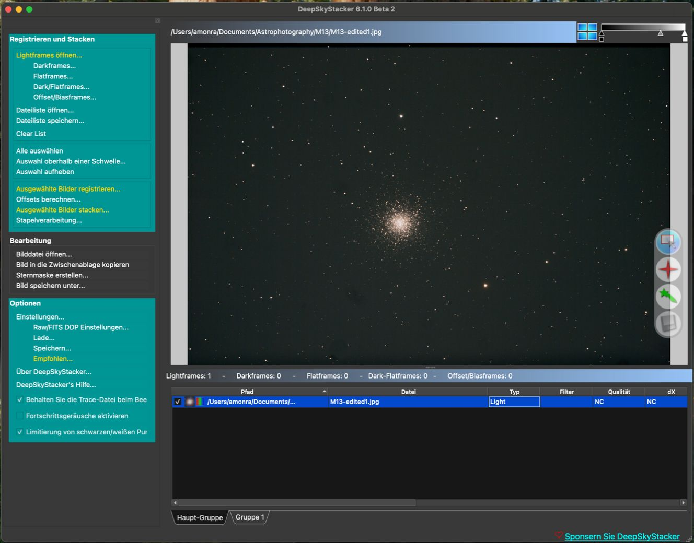 |
Quick Start
Sie kommen gerade von einer arbeitsreichen Nacht zurück und haben alle Bilder (Lights, Darks, Offsets und Flats) auf Ihren PC geladen.
Als ersten Schritt fügen Sie alle Bilder (entsprechend Ihrem Typ) zur Liste hinzu.
Verwenden Sie dazu die Befehle auf der rechten Seite:
- Lightframes öffnen...
- Darkframes...
- Flatframes...
- Offset/BiasFrames...
Dann starten Sie den Registrierungsprozess, wählen "Nach der Registrierung stacken" und geben den Prozentsatz ein, wieviele der Bilder Sie nach der Registrierung für den Stacking-Prozess verwenden wollen.
Wenn Sie RAW-Dateien verwenden (was ich nur sehr empfehlen kann), müssen Sie vor dem Starten des Registrierungs-Prozesses die RAW-Einstellungen auswählen.
Sie können nun beruhigt schlafen gehen, mit dem Wissen, am anderen Morgen die ersten Ergebnisse Ihrer Fotonacht zu sehen.
Wichtig: Selbst wenn Ihr PC nach dem Stacking-Prozess abstürzt, ist das Resultat automatisch in der speziellen Datei
AutoSave.tif gespeichert.
Register - Registrierung und Stacking
Das Registrierungs und Stacking Register enthält alle Befehle und Funktionen, die man zum Registrieren und Stacken benötigt.
In diesem Register können Sie Frames jeden Typs (Light, Dark, Flat und
Offset/Bias) zu einer Liste hinzufügen, Dateilisten speichern und entfernen, Vorschaubilder ansehen und den Registrierungs und Stacking-Prozess starten.
|
Dateien können ganz einfach per Drag&Drop aus dem Datei-Explorer eingefügt werden.
Bevor die Dateien dann der Liste beigefügt werden, wird nocheinmal der Datei-Typ nachgefragt. |
Die rechte Seite enthält nun die Bilderliste und das Vorschaubild.
Am unteren Rand der Bilderliste befinden sich eine Reihe von Tabs, mit denen Sie auf die einzelnen Datei-Gruppen zugreifen können. Wenn Sie einen Gruppen-Tab anklicken, werden alle Dateien in dieser Gruppe in der Liste angezeigt.
Wenn Sie mehr über Datei-Gruppen erfahren wollen, schauen Sie hier in die"Technischen Details".
Rechts oben über dem Vorschaubild befindet sich ein Schieberegler zur Änderung der Gammawerte des angezeigten Bildes, um schwache Details sichtbar zu machen.
Diese Änderung des Gammawertes hat natürlich keine Auswirkung auf das echte Bild. Es soll lediglich die Vorschau erleichtern.
|
Es ist möglich, den Stacking-Prozess automatisch nach der Registrierung, mit der Eingabe der Prozentzahl der zu verwendeten Lightframes,zu starten.
Nur die besten xxProzent der Bilder, basierend auf der Score-Wert-Berechnung, werden dann gestackt. |
|
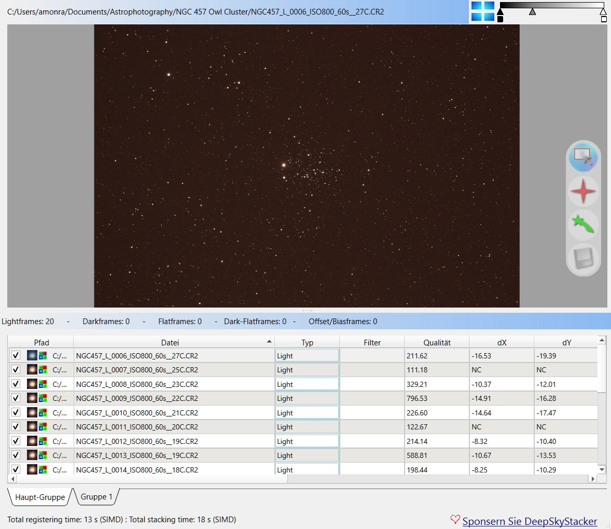 |
Die "Offsets berechnen..." Funktion wird dazu verwendet, die Verschiebung und den Rotations-Winkel zwischen den einzelnen Aufnahmen zu ermitteln ohne den Stacking-Prozess zu starten. Der berechnete Versatz und der Rotationswinkel werden in der Bilderliste in den Spalten dx,dy und Winkel angezeigt.
Anmerkung: Es ist nicht notwendig, den Offset vor dem Stacking-Prozess manuell auszurechnen, da sowohl der Offset, wie auch der Rotationswinkel der zu stackenden Bilder automatisch vor dem Stacken von DeepSkyStacker berechnet wird.
Mit dem Befehl "Auswahl ab einem Wert..." kann man alle Bilder auswählen, die entweder den gleichen oder einen höheren Score
Wert haben, als der eingegebene Wert.
|
Bevor nun der Stacking-Prozess startet, werden auf einer eingeblendeten Anzeige alle Schritte nocheinmal zur Kontrolle aufgelistet.
Es ist sehr wichtig zu wissen, dass die Lightframes automatisch auf ihre Kompatibilität zu den bei Ihren Darkframes verwendeten ISO-Einstellungen und Belichtungszeiten überprüft werden.
Flatframes und Offset/Biasframes werden nur in Bezug auf den verwendeten ISO-Wert überprüft.
In jedem Fall wird die beste Abstimmung der Frames vorgeschlagen und eine Warnung angezeigt, wenn ISO-Wert und/oder Belichtungszeit nicht übereinstimmen.
|
Es ist möglich, vorübergehend eine Verwendung nicht abgestimmter ISO-Werte und Belichtungszeiten mit dem Kontextmenü zu "erzwingen" (forcierte Anwendung). |
In diesem eingeblendeten Dialog können Sie auch die Stacking-Methode direkt für jeden Bildertyp, mit Klick auf den Link oder den "Stacking Parameter" Button ändern.
|
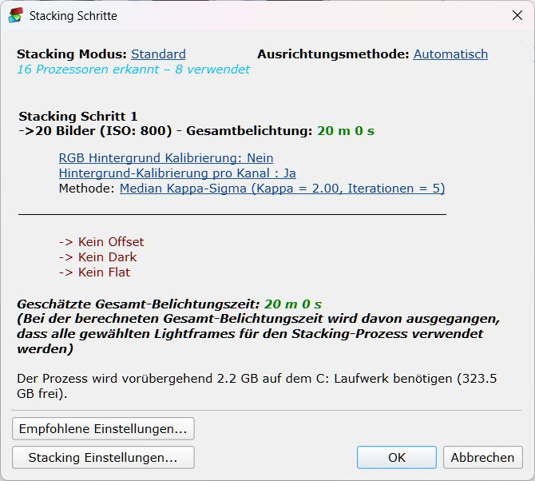
|
|
Es öffnet sich damit ein neuer Dialog, in dem man den
Ordner für die temporären Dateien, die während des Stacking-Prozesses
anfallen, ändern kann und in dem man alle Einstellungen, die den
Stacking-Prozess betreffen findet.
Im ersten Register "Ergebnis" wählen
Sie den Stacking-Modus, darunter auch die Möglichkeit, ein
benutzerdefiniertes Auswahlrechteck zu
verwenden.
In jedem Modus wird der Offset (Bildversatz),
ausgehend vom Referenzframe, berechnet. So bildet der "Mosaik" Modus kein
echtes Mosaik, sondern nur ein Pseudo-Mosaik.
In diesem Register können Sie auch, wenn gewünscht,
die passende Drizzle Option zum Stacken
auswählen.
|
Die Drizzle-Option
erstellt Bilder, die 4 oder 9 mal größer sind als das
Ausgangsbild!
Für Bilder von DSLR's, die ja bekanntlich schon
groß sind, benötigt DeepSkyStacker in der Drizzel-Option zum
Verarbeiten sehr viel Speicher- und
Festplattenplatz. |
|
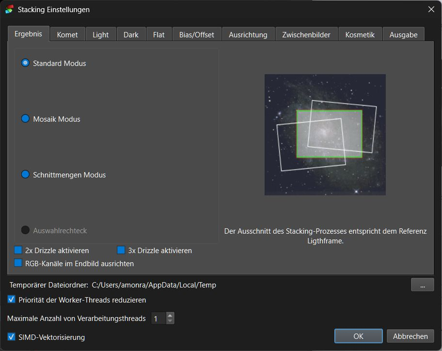
|
|
Mit den anderen Register- Light, Dark, Flat und Bias
können Sie die Stacking Methoden für
jede Art von Frames ändern, sowie die Hintergrund-Kalibrierungs
Option für die Lightframes oder die automatische Erkennung und Entfernung
von Hot-Pixel und Erkennung und Entfernung
fehlerhafter Zeilen für die Darkframes aktivieren.
Wenn alle Ihre Einzelbilder FITS-Dateien sind und
gültige WCS-Daten (World Coordinate System) in den FITS-Dateiköpfen
enthalten, bestimmt das Kontrollkästchen „FITS-WCS-Daten verwenden“, ob
diese Daten zur Bestimmung der Bildverschiebungen und der Drehung in Bezug
auf den Referenzrahmen verwendet werden sollen.
Ist das Kontrollkästchen aktiviert, werden die
Bildversätze und die Drehung in Bezug auf den Referenzrahmen aus den
WCS-Daten abgeleitet, was sehr schnell geht. Ist es hingegen nicht
aktiviert, werden die Versätze und die Drehung durch den Vergleich der
Positionen der Sterne im Referenzrahmen und im aktuellen Bild berechnet,
was wesentlich langsamer ist.
|
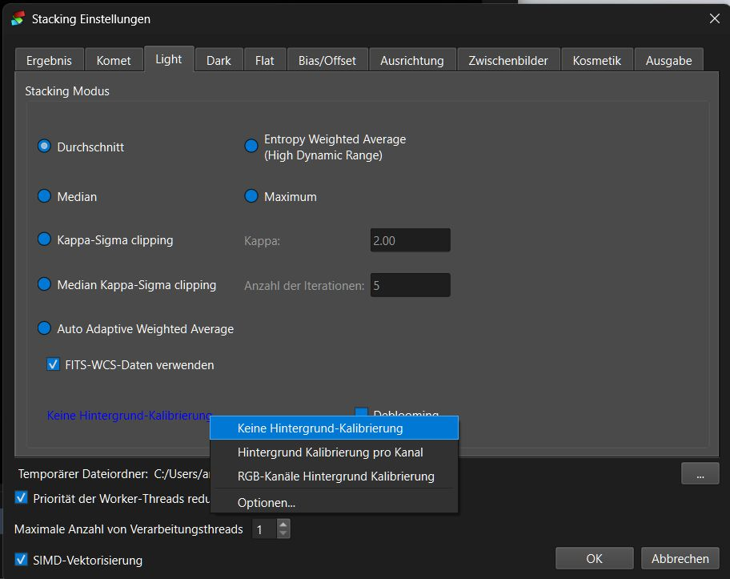
|
|
Im
Register "Ausrichtung" können Sie die Ausrichtungs-Methode festlegen, mit
der die Lightframes ausgerichtet werden sollen.
Sie können zwischen Bilinear, Bisquared oder Bicubischer Umwandlung wählen. Sie können
allerdings auch DeepSkyStacker die Auswahl selbst treffen lassen, indem
sie "Automatisch" anklicken. In Abhängigkeit der Sternanzahl wird die
beste Methode automatisch ermittelt.
|
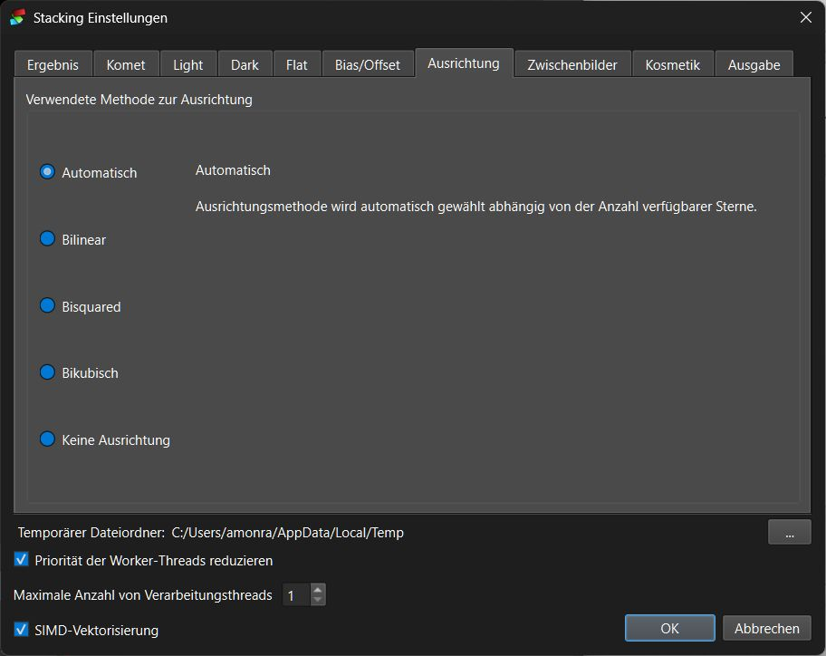
|
|
In diesem Register können Sie die Einstellungen für
die Zwischenbilder festlegen.
Es stehen zwei Optionen zum Erstellen von Dateien,
die Zwischenbilder enthalten, zur Auswahl:
Mit der ersten Option erstellen Sie eine Datei,
die ein kalibriertes Bild jedes Lightframe enthält.
Mit der zweiten Option
erstellen Sie eine Datei, die ein kalibriertes und registriertes Bild
jedes Lightframe enthält.
Die
erstellten Dateien haben den gleichen Namen und Speicherort, wie die
dazugehörigen Lightframes mit einer .cal.tif oder .cal.fts-Endung für die
kalibrierten Bilder und einer .reg.tif oder .reg.fts- Endung für die
registrierten und kalibrierten Bilder.
Die Dateien sind immer unkomprimierte TIFF oder
FITS-Dateien, monochrom oder farbig, mit 8, 16 oder 32 Bit, abhängig von
der Bit-Tiefe des Lightframe.
|
Wenn Sie eine dieser Optionen auswählen,
sollten Sie sicher sein, dass Ihr PC genug Speicherplatz hat, um die
Menge an Bildern zu speichern. |
|
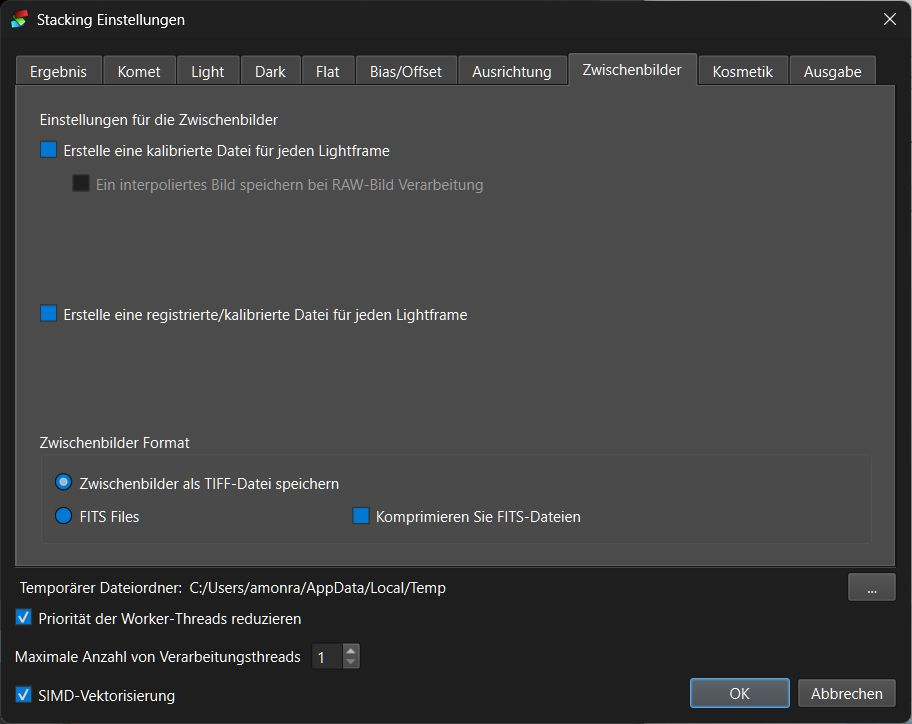 |
|
In
diesem Register können Sie festlegen, ob und wie die kalibrierten Bilder
vor dem Stacken "bereinigt" werden sollen.
Ziel dieser Kosmetik-Funktion ist, die Erkennung und
Entfernung von Hot- oder Cold-Pixel nach dem
Kalibrierungsvorgang.
Da diese Optionen das Bildresultat ernsthaft
verändern können, sind sie mit äußerster Vorsicht einzusetzen!
Zwei Parameter sind notwendig, um das
Kosmetik-Cleaning-Verhalten zu bestimmen.
Der erste Parameter legt die Filtergröße (Pixelgröße)
fest, mit der Hot- und Coldpixel erkannt und entfernt werden. Je größer
der Filter, desto länger dauert der Prozess und desto "weicher" wird das
Bildresultat.
Der zweite Parameter legt den Schwellenwert fest,
unterhalb dessen keine Korrektur vorgenommen wird (der Pixelwert bleibt
der gleiche).
Ein kleinerer Schwellenwert
bedeutet, dass mehr korrigiert wird.
In der letzten Option kann man wählen, ob man ein
Bild erstellen möchte, das alle entfernten Pixel für jedes Lightframe
zeigt.
In diesem Bild werden entfernte Hot-Pixel
weiß dargestellt, entfernte Cold-Pixel dunkelgrau und alle anderen Pixel
hellgrau.
Die erstellten Bilddateien haben den
gleichen Namen und Speicherort wie das gewählte Lightframe mit einer
.cosmetic.tif oder .cosmetic.fts-Endung.
|
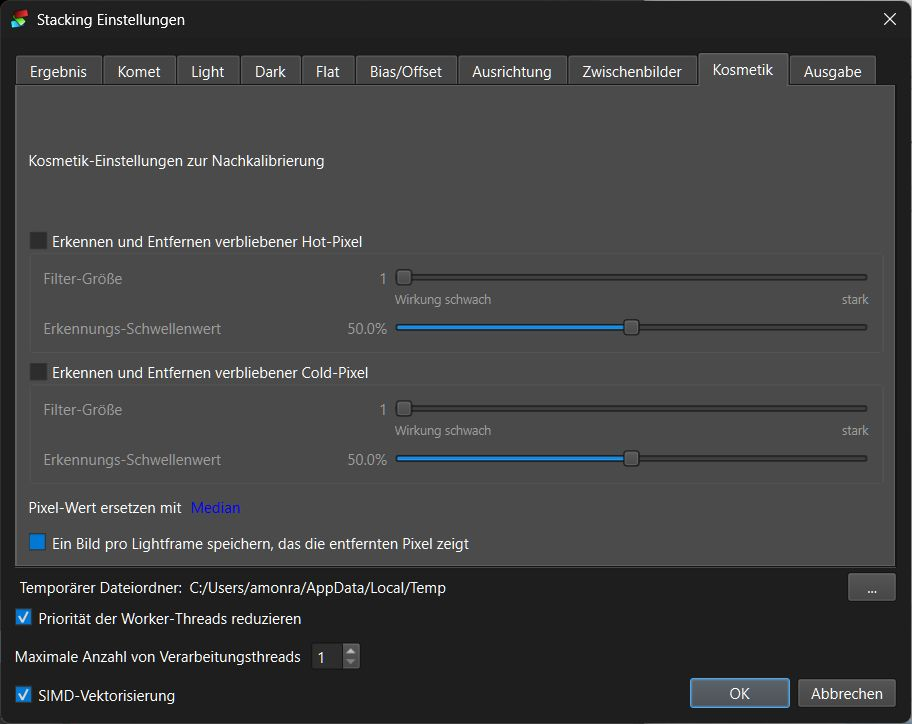 |
|
Das
Register "Komet" ist nur verfügbar, wenn mindestens zwei Lightframes
(inclusive des Referenz Lightframes) einen registrierten Kometen
enthalten.
In diesem Fall können Sie im Register "Komet" den
Stacking-Modus zwischen 3 verfügbaren Modi auswählen.
Mehr Info darüber im Thema
Komet Stacking in den
"Technischen Details. |
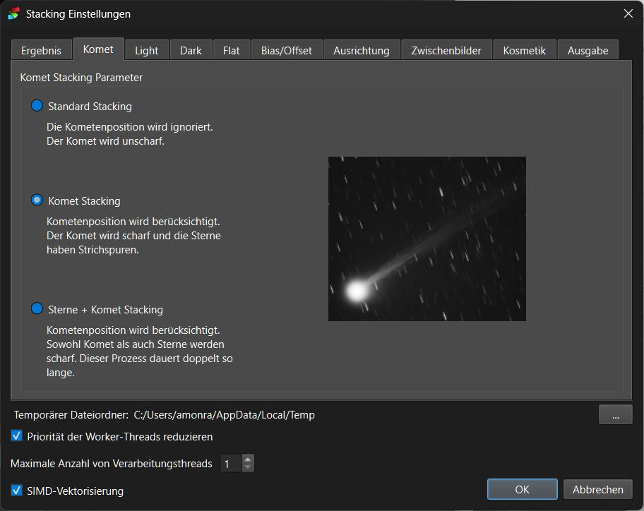 |
Nach dem Stacking-Prozess wird das fertige Bild in einer
AutoSave.tif Datei gespeichert, die sich im gleichen Ordner wie das
Referenz-Lightframe befindet..
Sollte dort schon eine
Datei mit dem Namen Autosave.tif existieren, wird automatisch eine Datei
mit dem Namen Autosave001.tif (002, 003, usw....) erstellt.
Stapelverarbeitung (Batch-Stacking)
Der
Stapelverarbeitungs (Batch Stacking) Dialog wird benötigt, wenn man Bilder aus
mehr als einem Stack erstellen möchte.
|
Wenn Sie zum Beispiel ein Bild aus den gestackten
Bildern einzelner Kanäle (CCD-Filteraufnahmen - Rot, Grün, Blau und
Luminanz) erstellen wollen und keine Stapelverarbeitung wählen können,
müssten Sie jeden Stackvorgang einzeln starten.
Natürlich kann diese
Funktion auch dazu benutzt werden, vorhandene Datei-Listen zu stacken.
Sie müssen nur Dateilisten,
die Sie vorher erstellt und abgespeichert haben, zu dieser Batch-Liste
hinzufügen. Alle ausgewählten (angeklickten) Datei-Listen werden dann in
die Bearbeitung mit einbezogen.
Am Ende des Stacking-Prozesses wird der Name jeder
gestackten Datei-Liste durch den Dateinamen der Ausgabedatei
ersetzt.
Anmerkung:
- Ausserdem ist es nicht möglich ein Auswahlrechteck
in der Stapelverarbeitung zu verwenden.
|
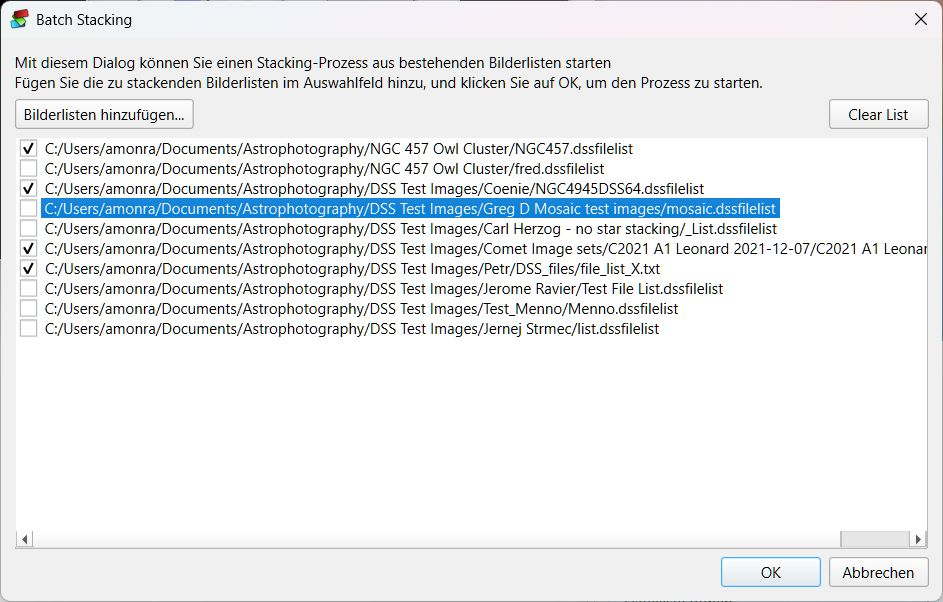 |
Register - Bearbeitung
Das "Bearbeitung"-Register enthält Befehle und Funktionen
rund um die Nachbearbeitung.
|
Ich möchte betonen, dass DeepSkyStacker lediglich eine
einfache Streckung und Farbanpassung des Bildes ermöglicht, um das
Ergebnis des Stacking-Prozesses zu visualisieren. Bei fehlendem Hintergrundverlauf lässt sich jedoch mit den
hier bereitgestellten Werkzeugen möglicherweise ein durchaus
zufriedenstellendes Ergebnis
erzielen.
Komplexere Nachbearbeitungen sollten mit speziell dafür
entwickelter Software durchgeführt
werden.
Der Bearbeitungsreiter enthält eine Vorschau des
RGB-Histogramms, einen Reiter zur Anwendung der Midtone Transfer
Function (MTF) Streckung, einen Reiter zur Anwendung der inversen
Hyperbel-Sinus Streckung (ASinH) sowie einen weiteren Reiter zur Anpassung
des Farbabgleichs.
Um den Farbabgleich anzupassen, sollten Sie zunächst die
Streckparameter ändern und die Streckung anwenden. Wechseln Sie
anschließend zum Reiter „Farbabgleich“, nehmen Sie die gewünschten
Anpassungen vor und wenden Sie diese
an.
|
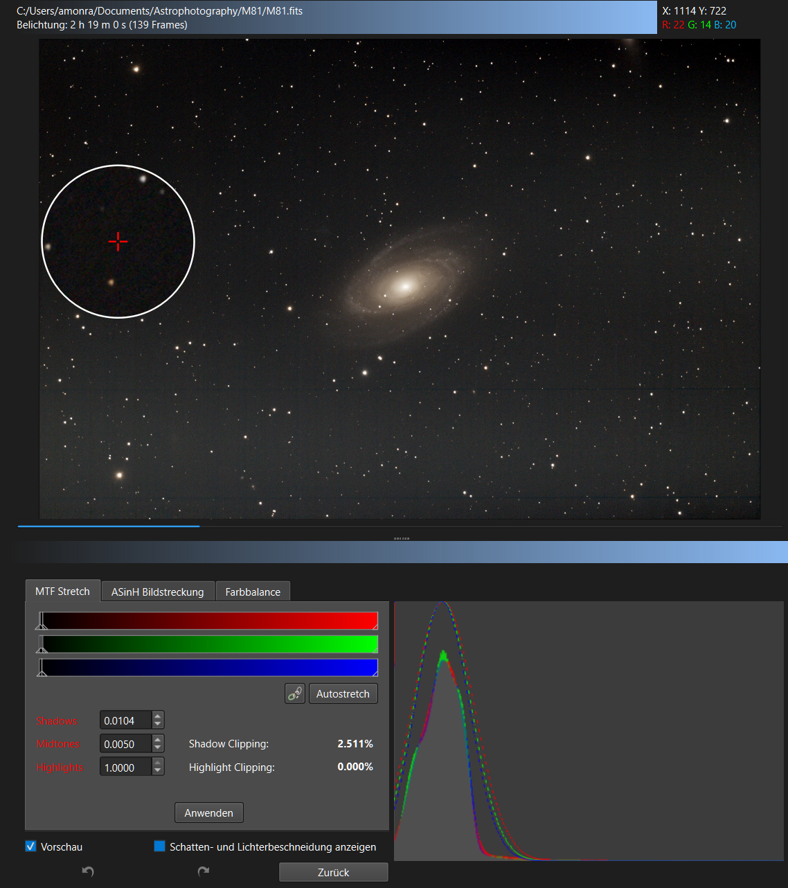 |
|
Die Midtone Transfer Function(MTF) -Transformation
oder
-Streckung
Die MTF-Transformation (oder Stretch) ist eines der
leistungsstärksten Werkzeuge zur Bilddehnung, die es gibt.
Das Werkzeug besteht aus drei Schiebereglern für jede
Primärfarbe, die zur Transformation des Bildes verschoben werden
können. Wenn die Schaltfläche „Verknüpfen“ (links neben der
Schaltfläche „Autostretch“) auf „Verknüpft“ gesetzt ist, sind die
Schieberegler für die drei Farben miteinander verknüpft; ist sie hingegen
auf „Nicht verknüpft“ gesetzt, sind die Schieberegler für jede Farbe
unabhängig voneinander.
Die Einstellung des linken Schiebereglers wirkt sich
auf das Schattensignal aus, der mittlere dient zur Anpassung der
Mitteltonbalance und der rechte Schieberegler regelt die
Lichter. Die Werte dieser Schieberegler werden unterhalb der
Schieberegler auf der linken Seite der Registerkarte als Drehfelder
angezeigt, die mit den Schieberegler-Einstellungen verknüpft
sind. Sie können die Werte in den Drehfeldern direkt
bearbeiten oder die Tasten „Bild auf“ und „Bild ab“ für grobe Änderungen
bzw. die Auf- und Ab-Pfeiltasten für feinere Änderungen verwenden.
Sind die Schieberegler miteinander verknüpft, wird
der Text links neben den Drehfeldern in der normalen „Textfarbe“
angezeigt. Sind sie nicht verknüpft, entspricht die Farbe des
Textes der Primärfarbe, für die derzeit Anpassungen aktiv sind.
Rechts neben den Drehfeldern wird der Prozentsatz der
Pixel angezeigt, die durch die Transformation abgeschnitten werden, da Sie
im Idealfall die durch die Transformation verursachten Abschneidungen
minimieren möchten.
Der Schieberegler „Schatten“ (links) legt den
Schwarz-Clipping-Punkt fest, mit dem Sie den Bildhintergrund abdunkeln
können, indem Sie den äußersten linken Rand des Histogramms abschneiden.
Dadurch werden Sensorrauschen entfernt und ein echter Schwarzpunkt
festgelegt. Wenn Sie diesen Schieberegler leicht nach rechts ziehen oder
den Wert im Eingabefeld „Schatten“ erhöhen, wird der Bildhintergrund
dunkler. Übertreiben Sie dies jedoch nicht, da Sie sonst schwache
Nebelstrukturen oder Details in den Schatten verlieren könnten.
Der Schieberegler „Mitteltonbalance“ steuert die
MTF-Funktion, die Eingabepixelwerte x (zwischen 0 und 1) auf Ausgabewerte
y abbildet. Formal lässt sich dies wie folgt ausdrücken:
(m
- 1)x
y = --------------
( 2m - 1)x - m
wobei m der Wert des Schiebereglers für die
Mitteltonbalance ist.
-
m = 0,5: Lässt die Mitteltöne des Bildes
unverändert (Identitätsfunktion).
-
m < 0,5: Hellt die Mitteltöne auf
(verschiebt die Kurve nach links).
-
m > 0,5: Verdunkelt die Mitteltöne
(verschiebt die Kurve nach rechts).
Der rechte Schieberegler oder das Drehfeld
„Highlights“ legt den Weißpunkt fest.
Zusätzlich zu den oben beschriebenen manuellen
Anpassungen gibt es eine Schaltfläche „Autostretch“. Ihr
Verhalten hängt davon ab, ob die Schaltfläche „Link“ (direkt links neben
der „Autostretch“-Schaltfläche) aktiviert ist. Wenn „Link“
aktiviert ist, werden die Bildstatistiken, die zur Berechnung der
anzuwendenden Stretch-Parameter herangezogen werden, als Durchschnitt über
alle drei Kanäle berechnet, wodurch die vorhandene Farbbalance erhalten
bleibt.
Wenn „linked“ auf „false“ gesetzt ist, werden die
Statistiken kanalweise berechnet, was bedeutet, dass die Farbkanäle
unabhängig voneinander gestreckt werden, was zu einer impliziten
Hintergrundneutralisierung führt, die Farbstiche tendenziell entfernt.
Schließlich ist es möglich, die für die Berechnung
des Autostretch verwendeten Parameter anzupassen, indem man mit der
rechten Maustaste auf die Schaltfläche „Autostretch“ klickt. Diese
steuern den Grad der Nichtlinearität, der durch den Autostretch-Prozess
angewendet wird.
Der Parameter „Target Background“ definiert die
mittlere Helligkeit des Hintergrundhimmels nach der Streckung. Der
theoretische Bereich liegt zwischen [0,0; 1,0], wobei der Standardwert
0,125 ist. Für ein akzeptables Ergebnis sollten Sie wahrscheinlich einen
Wert im Bereich von 0,125 bis 0,25 einstellen.
Der Parameter „Shadow Clipping“ steuert, wie weit
unterhalb des Medians der Schwarzpunkt gesetzt werden soll. Der Wert wird
in Einheiten der medianen absoluten Abweichung (MAD) angegeben, einem
robusten statistischen Maß für die Variabilität der Daten. Im Gegensatz
zur Standardabweichung, die sehr empfindlich auf Extremwerte reagiert,
misst die MAD den typischen Abstand vom Median und ist völlig
unempfindlich gegenüber Ausreißern.
Wenn das
Kontrollkästchen „Vorschau“ aktiviert ist (Standardeinstellung), ändern
sich das angezeigte Bild und das Histogramm entsprechend den
Parameteränderungen, sobald Sie die Parameter anpassen (entweder durch
direkte Bearbeitung der Drehfelder oder durch Auswahl des Drehfelds bzw.
Schiebereglers und Verwendung der Tasten „Bild auf“ und „Bild ab“ für
grobe Änderungen oder der Aufwärts- und Abwärtspfeiltasten für feinere
Änderungen). Um die Änderungen jedoch tatsächlich zu
übernehmen, müssen Sie auf die Schaltfläche „Übernehmen“ klicken.
|
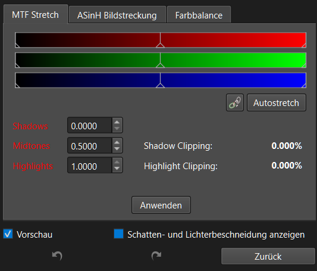
|
|
Die ASinH-Transformation oder
-Streckung
Die ASinH-Transformation verstärkt die dunkleren Bereiche
eines Bildes. Die Parameter sind der Streckungsfaktor (Beta), der
Schwarzpunktwert und die Option, ob die „Human-weighted Luminance“
verwendet werden
soll.
Bei Schwarzweißbildern werden die Pixelwerte mit folgender
Funktion
modifiziert:
Pixel = (Original - Schwarzpunkt) × asinh(Original ×
Streckung)
-------------------------------------------------------
Original ×
asinh(Streckung)
Bei Farbbildern lautet die
Funktion:
Pixel = (Original - Schwarzpunkt) ×
asinh(RGB-Original × Streckung)
-----------------------------------------------------------
RGB-Original ×
asinh(Streckung)
Der Streckungsfaktor (Beta) kann Werte zwischen 0,0 und
1000,0 annehmen. Größere Werte führen zu einer stärkeren
Bildstreckung.
Der Schwarzpunktwert liegt im Bereich von [00000,
0,20000]. Der Wert 0,2 bedeutet, dass der Schwarzpunkt auf 20 % des
maximal möglichen ADU-Werts eingestellt ist. Werte unterhalb des Schwarzpunkts werden als Schwarz
interpretiert.
Da rgb_original der Mittelwert der drei Farbkanäle ist,
können ein oder zwei Kanalwerte über rgb_original liegen und daher
abgeschnitten werden. Um dieses Problem zu beheben, wird der
RGB-Mischalgorithmus (entwickelt von den Entwicklern des GHSAstro-Tools
zur Anpassung der Kanalverstärkung) verwendet, um ein solches Abschneiden
zu verhindern.
Wenn die Option „Vom Menschen gewichtete Leuchtdichte“
nicht aktiviert ist, entspricht rgb_original dem Mittelwert der drei
Pixelwerte. Ist sie aktiviert, ändert sich die Gewichtung auf 0,2126
für Rot, 0,7152 für Grün und 0,0722 für Blau, wodurch die Ergebnisse der
menschlichen Farbwahrnehmung
näherkommen.
Wenn das Kontrollkästchen „Vorschau“ aktiviert ist
(Standardeinstellung), werden Bild und Histogramm nach der
Parameteränderung (direktes Bearbeiten der Felder im Drehfeld oder Auswahl
des Drehfelds bzw. Schiebereglers mit den Tasten Bild auf und Bild ab für
grobe Änderungen bzw. den Pfeiltasten für feinere Änderungen) entsprechend
angepasst. Um die Änderungen zu übernehmen, klicken Sie auf
„Anwenden“.
Beachten Sie, dass die Streckung multiplikativ ist. Wendet
man beispielsweise zuerst eine Streckung von 200,0 und anschließend eine
von 10,0 an, beträgt die effektive Bildstreckung
2000,0. |
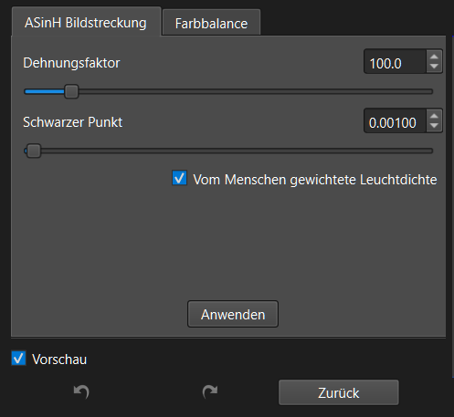 |
|
RGB-Histogramm
Das RGB-Histogramm visualisiert die Verteilung der
Pixelwerte für jeden Kanal (Rot, Grün, Blau) im
Bild.
Zusätzlich wird für jeden Kanal eine Gauß-Kurve über die
Histogrammdaten gelegt.
Über die Registerkarte
„Farbbalance“ (siehe unten) können Sie die Farbbalance des Bildes
anpassen. Dadurch wird das Histogramm neu gezeichnet.
|
 |
|
Farbbalance-Anpassung
Im Reiter „Farbbalance“ können Sie die Farbbalance des
Bildes anpassen. Nehmen Sie diese Anpassung nach dem Anwenden einer
Bildstreckung vor.
Wenn das Kontrollkästchen „Vorschau“ aktiviert ist
(Standardeinstellung), werden die angezeigten Bilder und Histogramme nach
der Anpassung der Parameter (durch Auswahl des entsprechenden
Schiebereglers und Verwendung der Bild-auf- und Bild-ab-Tasten für grobe
Änderungen oder der Pfeiltasten für feinere Änderungen) entsprechend
aktualisiert. Wie bei der Bildstreckung müssen Sie jedoch auch hier auf
die Schaltfläche „Anwenden“ klicken, um die Änderungen zu
übernehmen. |
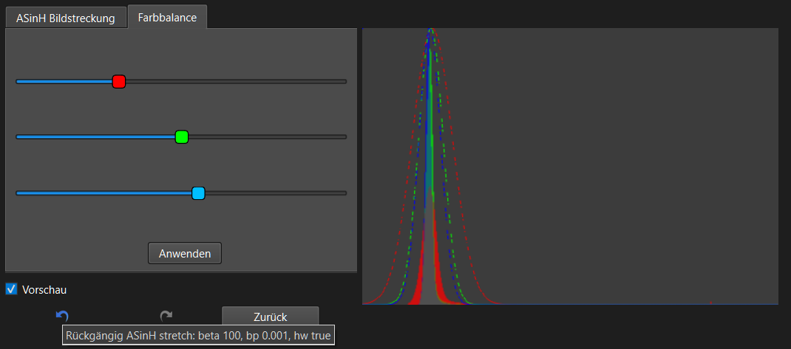 |
Anpassungsparameter rückgängig
machen/wiederherstellen
Am unteren Rand jedes Tabs befinden sich Schaltflächen:
-
Letzte Änderungen am Bild anwenden
-
Letzte Änderungen rückgängig machen
-
Letzte rückgängig gemachte Änderungen wiederherstellen
-
Alle Werte zurücksetzen
Bild
laden
DeepSkyStacker kann TIFF-Bilder (8, 16 und 32 Bit; monochrom
oder RGB) oder FITS-Bilder (8, 16, 32 und 64 Bit; monochrom oder RGB)
laden. Nach Abschluss des Stacking-Vorgangs wird das erstellte Bild
automatisch geladen.
Das resultierende Bild speichern
|
DeepSkyStacker kann das resultierende Bild auf zwei Arten
als 16- oder 32-Bit-TIFF- oder FITS-Datei speichern:
-
Anpassungen anwenden: Das Bild wird mit allen Änderungen
gespeichert, die Sie mit der Schaltfläche „Anwenden“ vorgenommen
haben. Verwenden Sie diese Option, wenn Sie weitere Anpassungen
in anderer Software vornehmen möchten.
-
Anpassungen nicht anwenden: Das Bild wird ohne die
Änderungen gespeichert, die Sie mit der Schaltfläche „Anwenden“
vorgenommen haben. Verwenden Sie diese Option, wenn Sie die gesamte
Nachbearbeitung in anderer Software durchführen
möchten.
|
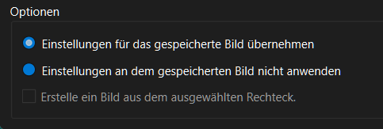 |
Mehr
Information über die Speichermethoden können Sie in den FAQ nachlesen.
Sternmaske erstellen
Die
Verwendung einer Sternmaske ist in der Nachbearbeitung oft von großem Nutzen,
speziell, wenn man am Hintergrund und den Sternen separat Einstellungen
vornehmen möchte.
Mit der Funktion "Sternmaske
erstellen", können Sie einige unterschiedliche Arten von Sternmasken erstellen,
die Sie dann später in Ihrem Programm zur Nachbearbeitung einsetzen können
(Photoshop, PixInsight, ...).
Wichtig:
DeepSkyStacker kann zwar diese Masken erstellen, aber selbst in keiner Weise
nutzen.
Ich habe sie trotzdem in DeepSkyStacker
integriert, weil man nach einer Sternerkennung (Registrierungs-Prozess) sowieso
die Sternpositionen ermittelt hat und sehr schnell daraus eine brauchbare
Sternmaske generiert. Einfach ein zusätzliches Feature.
|
Was ist eine
Sternmaske?
Eine Sternmaske ist ein
synthetisches Graustufenbild, bei dem alle Sterne über einer gewissen
Größe durch runde, weiße Flächen ersetzt werden, deren Übergang von weiß
nach schwarz einem bestimmten Kurvenverlauf folgen.
Rechts sehen sie ein
Beispiel einer Sternmaske.
Wenn Sie mit der Maus
über den Text fahren,
sehen Sie das Bild oder die Sternmaske. |

Sternfeld-Aufnahme
|
|
Sternmaske erstellen
Zum Erstellen einer Sternmaske muß zuerst einmal ein
Bild über das Menü "Bearbeitung" geladen werden.
Klicken Sie dann einfach auf das "Sternmaske
erstellen..."-Menü, auf der rechten Seite. Danach öffnet sich links eine
neue Dialogbox.
Hier können Sie dann die Form einstellen, die die
Sterne in der späteren Maske haben sollen. Außerdem legen Sie hier den
Schwellenwert fest, bei dem die Sterne noch in der Maske berücksichtigt
werden sollen und noch einige andere Parameter.
Das einzige, was Sie dann noch tun müssen, ist den
OK-Button drücken. Sie werden dann gefragt, in welcher Dateiform (TIFF
oder FITS) Sie die Sternmaske speichern möchten.
Die gespeicherte Datei ist immer ein 16 Bit
Graustufenbild. Diese Datei wird nach dem Erstellen nicht automatisch von
DeepSkyStacker geladen.
Die Sternmaske wird aus dem Bild erstellt, was Sie in
der Anzeige sehen. DeepSkyStacker geht immer davon aus, dass die
Einstellungen, die Sie vorgenommen haben, auch angewendet
wurden. |
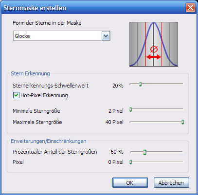 |
Die Bilderliste
Die
Bilderliste, auf die gemeinsam vom Registrierungs- und Stacking-Prozess
zugegriffen wird, enthält alle Bilder, die für die beiden Prozesse verwendet
werden.
- Lightframes
- Darkframes
- Flatframes
- Bias/Offsetsframes
Es werden aus diesen Listen nur die Bilder zum registrieren
und stacken verwendet, die vorne in der Checkbox abgehakt sind.
Die Liste ist in folgende Spalten
unterteilt:
| Checkbox |
Nur wenn diese abgehakt ist, wird das Bild
verwendet |
| Pfad |
Pfadangabe der Bild-Datei |
| Datei |
Name der Bild-Datei |
| Art |
Bilder-Typ:
Light
Dark
Flat
Dark Flat
Bias |
| Score |
Score-Wert/Lightframes, berechnet aus dem
Registrierungs-Prozess oder
keine Angabe bei
Dark-, Flat- und Bias/Offsetframes.
Wenn Sie ein
Bild als Referenz-Lightframe mit dem Kontextmenü
ausswählen, steht vor dem Score-Wert dieses Zeichen (*). |
| dX |
X Offset (Versatz in Pixel) aus dem Stacking-Prozess
berechnet |
| dY |
Y Offset (Versatz in Pixel) aus dem
Stacking-Prozess berechnet |
| Winkel |
Rotationswinkel (in °) aus dem Stacking-Prozess
berechnet |
| Datum/Zeit |
Datum und Uhrzeit der entsprechenden
Datei |
| Größe |
Größe des Bildes in Pixel (Breite x
Höhe) |
| CFA |
Wird angezeigt, wenn das Bild mit einem
Color Filter Array (CFA) erstellt wurde, was der Fall bei allen
RAW-Bildern ist, die eine Bayer-Matrix
verwenden |
| Tiefe |
Art (Graustufen oder RGB) und die Anzahl der Bit/pro
Kanal |
| Infos |
Extra Informationen über das Bild (RAW mit
DSLR Information, TIFF oder andere) |
| ISO |
ISO-Wert des Bildes |
| Belichtung |
Belichtungszeit des Bildes |
| FWHM |
FWHM: Full Width Half Maximum-Wert (in Pixel).
Das ist der durchschnittliche FWHM Wert aller
erkannten Sterne im Bild |
| #Sterne |
Anzahl der erkannten Sterne.
Wenn auf dem Bild eine Kometen-Position festgelegt
wurde, steht hinter dieser Zahl ein +(C) |
| Himmels-Hintergrund |
Himmels-Hintergrund-Wert des registrierten
Bildes in % |
Sie können
jede Spalte durch einen Klick auf die Spaltenüberschrift sortieren lassen (bei
nochmaligem Anklicken wird die Sortierung wieder aufgehoben).
Sie können die Reihenfolge und die
Breite jeder Spalte verändern. Diese Änderungen werden beim Beenden von
DeepSkyStacker gespeichet, sodass sie beim nächsten Start wieder zur Verfügung
stehen.
Sie können ein
ausgewähltes Bild aus der Liste als Vorschaubild aufrufen.
Sollte das ausgewählte Bild eine RAW-Datei sein, werden
zuerst die RAW DDP Einstellungen zum Dekodieren des RAW-Bildes verwendet, bevor
es angezeigt wird.
|
Sie
können mehrere Dateien aus der Liste auswählen.
Mit einem Kontextmenü
(rechte Maustaste) können Sie das zu stackende Referenz-Frame
manuell auswählen, die angezeigte Frameart wechseln, Dateien auswählen
oder deaktivieren, Dateien von der Bilderliste oder der Ansicht entfernen,
Datei-Eigenschaften überarbeiten, Inhalt der Liste in die Zwischenablage
kopieren und Dateien endgültig von der Festplatte löschen.
|
Wenn Sie ein Referenz-Frame auswählen, das zum
Stacking-Prozess nicht abgehakt ist, wird von diesem Referenz-Frame
trotzdem der Offset berechnet, obwohl dieses Frame nicht gestackt
wird. |
|
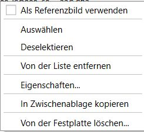
|
|
In der Dialogbox "Eigenschaften" kann man den
Bildertyp ändern, sowie temporär (nur für die aktuelle Sitzung) den
ISO-Wert und die Belichtungszeit von einem oder mehreren Bildern
ändern.
Anmerkung:
Sie brauchen keine Angst zu haben, irgend eine
wichtige Bildinfo dauerhaft zu verändern. Wenn Sie den ISO-Wert und die
Belichtungszeit in diesem Dialogfeld ändern, werden diese Einstellungen
nicht in die original Bilddatei gespeichert. Die veränderten Werte sind
nur kurzfristig für die aktuelle Sitzung von Bedeutung. |
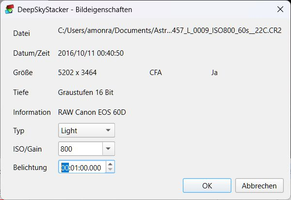 |
Vorschaubild
Die Vorschaubild-Funktion wird genutzt,
um mal schnell ein Bild aus der Bilderliste anzusehen (Registrierungs und
Stacking-Register) oder um ein Bild zur Bearbeitung aufzurufen
(Bearbeitungs-Register).
Sie
können das Vorschaubild aus- und einzoomen, indem Sie die Maus auf dem Bild
positionieren und das Einstellungsrad bewegen (Mousewheel). Dies ist die einzige
Möglichkeit zum Schwenken und Zoomen.
Editieren von Sternen und Kometen
|
Wenn ein Lightframe aus dem Registrierungs- und
Stacking-Register als Vorschaubild angezeigt wird, ist folgendes
möglich:
-
Sternpositionen zu
überarbeiten: Stars detected by DeepSkyStacker will be coloured
green. Von DeepSkyStacker gefundene Sterne werden grün
gefärbt. Sie können mit der linken Maustaste zusätzliche Sterne wählen
oder die von DeepSkyStacker gewählten abwählen.
-
die Kometenposition zu
überarbeiten
-
Sie können die einzelnen, oben
genannten Optionen mit der am rechten, unteren Bildrand eingeblendeten
Werkzeugleiste aufrufen.
Das unterste Symbol auf der Werkzeugleiste wird zum
Speichern der Änderungen verwendet.
|
Anmerkung
zur Kometen-Bearbeitung:
DeepSkyStacker
kann das Zentrum eines Kometen nicht automatisch erkennen.
Zum Erzwingen der
Kometenposition an einer bestimmten Stelle, müssen Sie während des
Markierens des Kometenkerns die Umschalt-Taste gedrückt
halten. |
|

|
|
Wenn sie ein Vorschaubild über das
Bearbeitungs-Register aufrufen, können Sie einen Bereich dieses Bildes
auswählen, indem Sie direkt im Bild ein Auswahlrechteck aufziehen.
Dieses Rechteck dient auf der einen Seite dazu,
ausgewählte Einstellungen nur auf dieses Rechteck anzuwenden (zum
Vergleich mit dem restlichen Bild) und auf der anderen Seite, um
gegebenenfalls nur den ausgewählten Bereich zu speichern.
Wenn kein Rechteck ausgewählt ist, werden die
Änderungen auf das gesamte Bild angewendet.
Wenn das Bild allerdings auf die Festplatte
gespeichert wird, sind alle Anpassungen auf das gesamte Bild angewendet
worden.
|

|
DDP-Einstellungen
Im "DDP-Einstellungen"-Dialog haben Sie Zugriff auf
alle Parameter, die während der Entwicklung der Bilddaten ein "echtes" Bild, benötigt
werden.
|
Bildanpassung (oder Farbanpassung)
Die Parameter sind:
-
Die Gesamtbildhelligkeit, die für den Grünkanal
gilt
-
Die Helligkeit der Rot- und Blaukanäle im Verhältnis zum
Grünkanal.
Die Bildanpassung (oder Farbanpassung) wird angewendet,
nachdem das Bild eingelesen und entsprechend dem Bildtyp (RAW, FITS oder
TIFF) skaliert wurde und alle Kalibrierungsbilder angewendet
wurden. Wenn Sie diese Anpassungen verwenden und die Werte über
den Standardwert von 1,0 hinaus erhöhen, werden immer mehr Pixel
gesättigt.
Die Helligkeits (oder Luminanz) Anpassung wirkt sich
gleichermaßen auf alle drei Kanäle aus. Die Werte für die Skalierungsfaktoren Rot und Blau beziehen sich auf den Grünkanal, dessen Skalierungsfaktor dem
Helligkeitswert entspricht.
Um 12-Bit-TIFF- oder
FITS-Dateien auf 16 Bit zu skalieren, stellen Sie den Helligkeitswert auf
16 ein.
Dies ist auch
hilfreich, um die Kanalbalance für TIFF-Dateien im FITS- oder CFA-Format
gemäß der Kameradokumentation anzupassen.
|
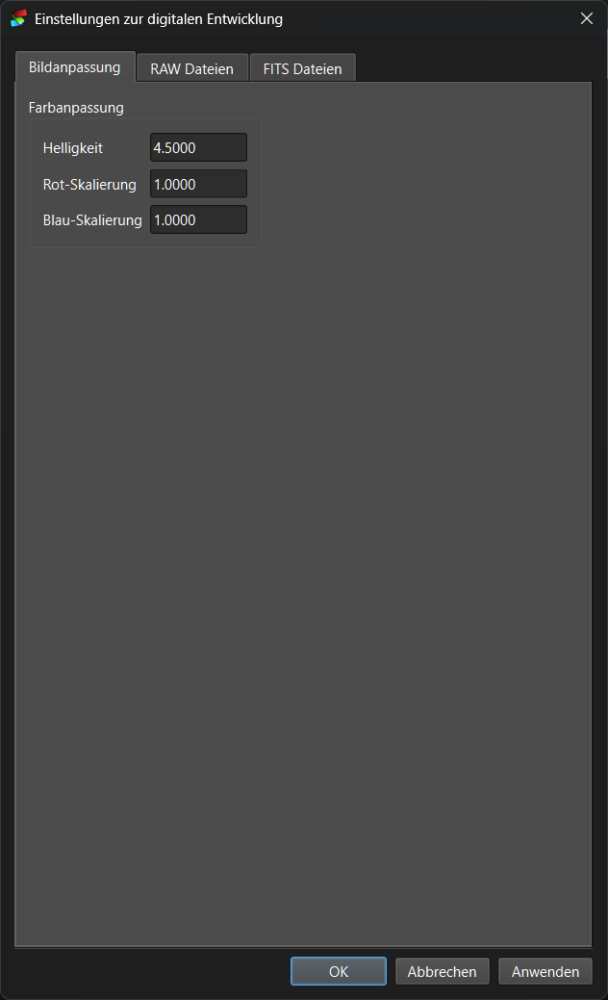 |
|
RAW-Dateien
Folgende
Einstellungs-Parameter stehen zur Verfügung:
-
Weißabgleich
-
Interpolations-Modus
Standardmäßig verwendet DeepSkyStacker
Tageslicht-Weißabgleich außer wenn entweder "Keine
Weißabgleichverarbeitung" oder "Weißabgleich der Kamera verwenden"
ausgewählt ist. Wenn Sie "Keine Weißabgleichverarbeitung" auswählen wird
gar kein Weißabgleich angewendet was wünschenswert ist wenn Sie für die
Nachbearbeitung der gestackten Bilder eine Software wie StarTools
verwenden. In den meisten anderen Fällen raten wir zur Verwendung von
Tageslicht-Weißabgleich (keine der Möglichkeiten ausgewählt).
Die
Option "automatischer Weißabgleich" wird nicht länger unterstützt da es
dazu führt dass jedes frame seinen individuellen Weißabgleich erhält was
das verrechnen mit darks und flats durcheinander bringt. Wenn Sie trotzdem
den automatischen
Weißabgleich verwenden wollen wählen Sie an Ihrer
Kamera den automatischen Weißabgleich und verwenden "Weißabgleich der
Kamera verwenden".
Die
Werte für den Weißabgleich werden aus den RAW-Files mittels LibRaw
(Copyright © 2008-2019 LibRaw LLC) gewonnen. LibRaw basiert auf dem
originalen DCRaw-Decoder für RAW-Files geschrieben von Dave Coffin.
Über die richtige Auswahl der Bayer-Matrix-Umwandlung
und das spezifische Verhalten der verschiedenen Bayer-Matrix-Optimierungen
können Sie in den Technischen Details mehr Info erhalten.
|
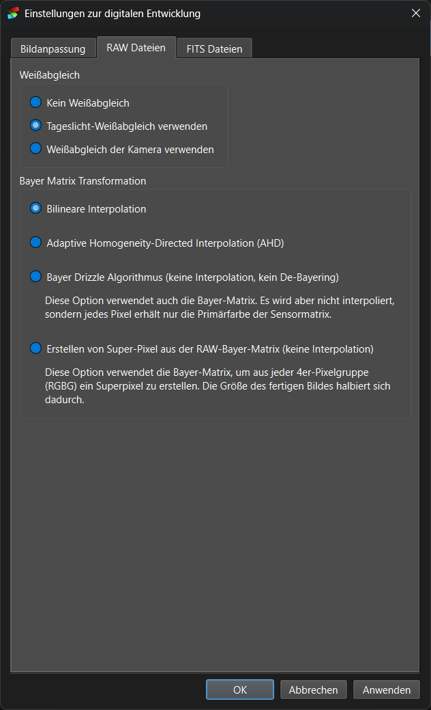 |
|
FITS-Dateien
Wenn das Kontrollkästchen "Monochrome 16 Bit FITS
Dateien sind RAW ..." nicht aktiviert
ist, versucht DeepSkyStacker, die automatische Erkennung der
CFA-Matrix anhand von FITS-Schlüsselwörtern wie BAYERPAT, COLORTYP und
MOSAIC (für Meade DSI-Farbkameras) zu verwenden. Wenn die FITS-Datei diese Schlüsselwörter nicht
enthält oder das falsche Muster in der Datei angegeben ist, können Sie das
Kontrollkästchen aktivieren und die Kamera / das Muster auswählen, die
bzw. das wie in früheren Versionen von DeepSkyStacker verwendet
werden soll.
Als erstes müssen Sie Ihre DSLR oder CCD Kamera, mit
der die Bilder in der Bilderliste erstellt wurden, aus der Dropdown-Liste
auswählen. Dies ist unbedingt notwendig, damit die korrekte
Bayer-Filter-Maske zum dekodieren verwendet wird, um aus dem S/W-Bild ein
Farbbild zu erstellen.
Folgende
Einstellungs-Parameter stehen zur Verfügung:
-
Passt die Werte DATAMIN und DATAMAX
an
- Interpolations-Modus
Bei der Angleichung der
Kanäle ist es sehr wichtig, dass Sie die Werte Ihrer DSLR oder CCD Kamera
hier eingeben.
Über die
richtige Auswahl der Bayer-Matrix-Umwandlung und das spezifische Verhalten
der verschiedenen Bayer-Matrix-Optimierungen können Sie in den Technischen Details mehr Info erhalten.
|
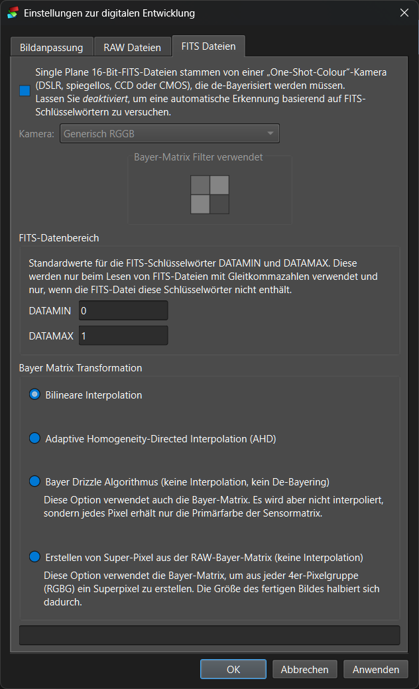 |